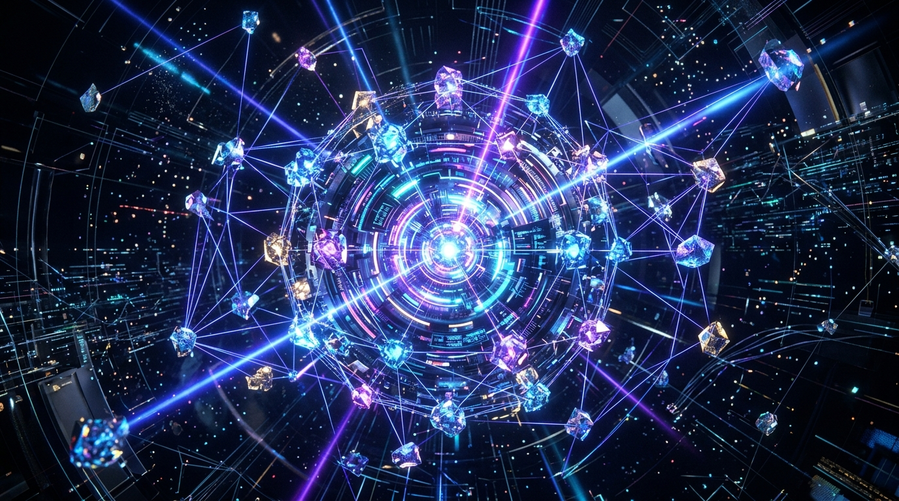
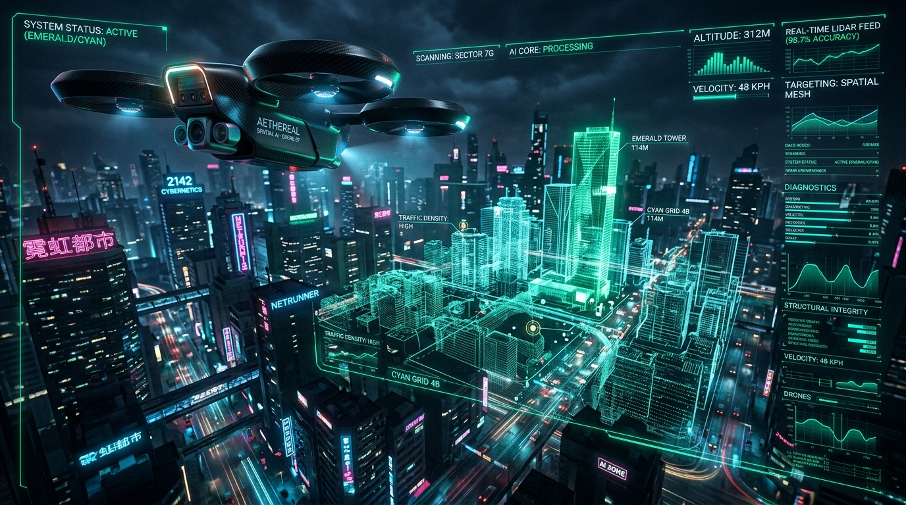

ARCHITECTING AUTONOMOUS INTELLIGENCE & 3D SPATIAL SYSTEMS
Senior AGI Systems & Spatial Perception Engineer specializing in deterministic multi-agent swarms, real-time volumetric neural raymarching, and mathematically verified synthetic benchmark evaluation. Pioneering resilient intelligence at the intersection of spatial computing and machine cognition.
Interactive 3D Video Showreel
Procedurally synthesized high-fidelity telemetry feeds streaming at 60 FPS. Switch between neural attention weight tensors, LiDAR spatial SLAM point clouds, quantum Bloch sphere rotations, and disassembled matrix streams in real-time.
Engineered For Determinism & Scale
Designing next-generation autonomous systems requires eliminating non-deterministic hallucinations, enforcing mathematically verifiable bounds, and rendering low-latency 3D spatial representations.
Autonomous Swarm Consensus
Decentralized multi-agent state machines with Byzantine fault tolerance, atomic rollback ledgers, and zero-overhead task handoffs across distributed nodes.
Real-Time Spatial SLAM & Raymarching
High-performance 3D point cloud reconstruction and signed distance field (SDF) shaders executing at 60 FPS to give AI agents spatial awareness of complex physical topographies.
10-Tier Temporal Vector Persistence
Hierarchical associative memory with human-like Ebbinghaus decay formulas, preventing context pollution while maintaining persistent cross-session episodic recall.
Benchmark & Evaluation Integrity
Rigorous synthetic test harnesses that separate internal regression tests from official evaluations, quarantine contaminated datasets, and enforce exact task numerator/denominator grading.
Verified Flagship Projects
Mission-critical AI runtimes, volumetric 3D spatial renderers, and quantum hardware accelerators. Every project card features dynamic interactive media and full architecture specifications.
Autonomous Agent Swarm
Distributed multi-agent execution runtime with dynamic leadership election, continuous heartbeat telemetry, and automatic task quarantine on deviation.
Neural Raymarcher Engine
Analytical distance field and volumetric radiance field engine rendering complex 3D manifolds and light reflections at locked 60 FPS directly in the browser.
10-Tier Vector Knowledge Graph
Biologically-inspired long-term agent memory system balancing episodic logs, semantic embeddings, and procedural schemas with automated entropy culling.

Quantum Photonic Neural Core
Hardware-aware quantum circuit simulation computing Bloch vector rotations and density matrices for optical tensor processing architectures.

Spatial Perception & Drone SLAM
Dense 3D point cloud feature extraction and real-time LiDAR Odometry and Mapping for sub-centimeter autonomous spatial navigation in GPS-denied environments.
Technical Specialization Matrix
Deep multi-disciplinary engineering across machine cognition, 3D graphics pipelines, distributed backend systems, and rigorous formal verification.
- Autonomous Swarm Loops
- Multi-Agent Tool Orchestration
- Structured JSON/AST Enforcement
- Self-Healing Error Correction
- WebGL & 3D Canvas Math
- GLSL Shaders & Raymarching
- 3D Perspective Projections
- Point Clouds & LiDAR SLAM
- Rust / Go High-Throughput Engines
- Vector DBs & HNSW Indexing
- WebSocket Microservices
- Raft & Byzantine Consensus
- Deterministic Benchmark Harnesses
- Contamination Isolation & Quarantine
- Adversarial Robustness Testing
- Strict Numerator/Denominator Grading
Interactive Holographic CLI
Direct console interface to the local agent runtime. Type help for available commands, eval to run the benchmark verification suite, or matrix to stream cyber glyphs.
Initiate Transmission
Ready to collaborate on cutting-edge AGI agent architectures, 3D spatial platforms, or high-throughput systems? Send a direct neural packet below.